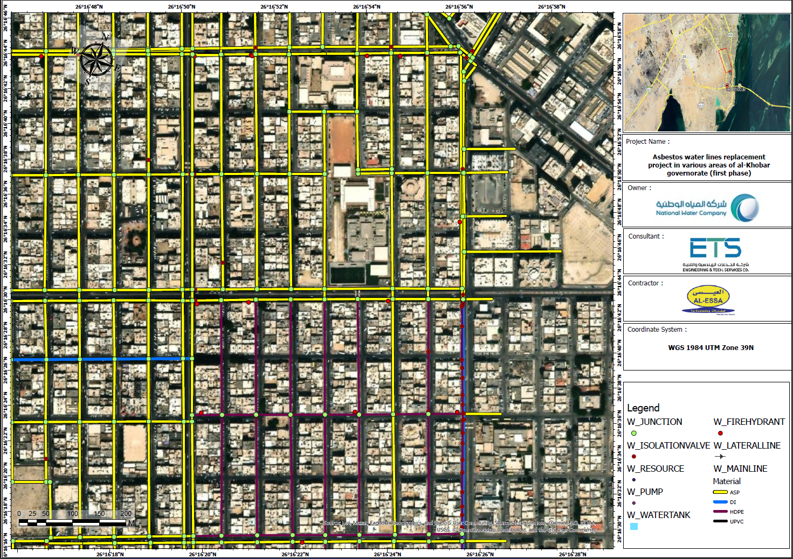
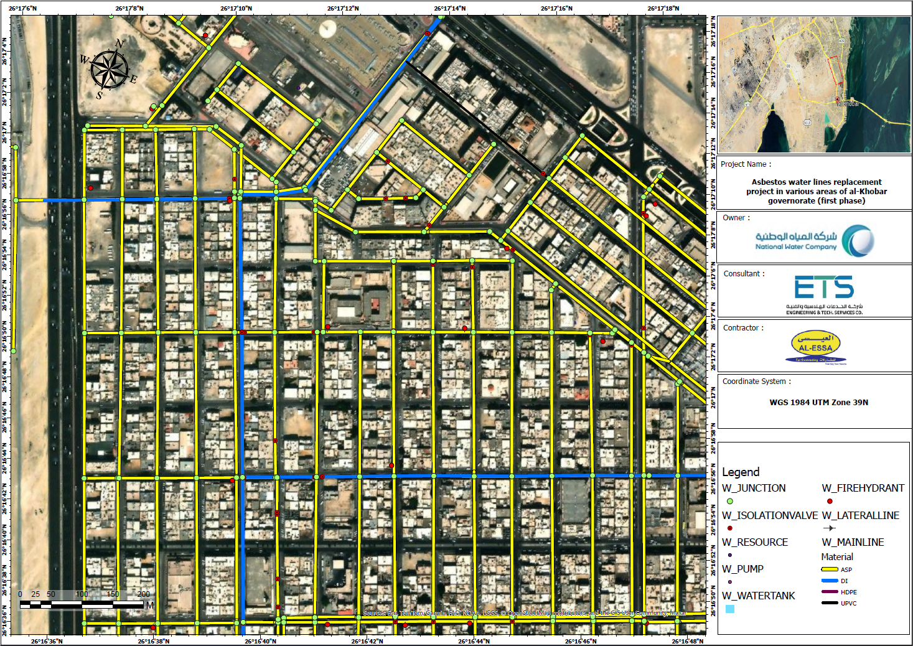

Project Gallery



Transforming aging asbestos pipeline infrastructure into fully compliant GIS-ready datasets for the National Water Company across Al Thuqbah and Al Khobar.
Project Gallery


Project Overview
Decades-old asbestos water pipelines needed full replacement across multiple districts. All newly installed assets — mains, fire hydrants, valves, and service connections — had to be accurately captured, structured, and submitted to the National Water Company in a clean, error-free GIS format ready for their asset management systems.
Acted as the GIS specialist responsible for converting raw survey and engineering data into submission-ready infrastructure datasets, while producing AutoCAD As-Built drawings directly from field survey outputs.
Network Coverage
Complete GIS documentation was produced for new distribution mains across the following diameter classes:
Key Contributions